Mutes
Each channel has a Mute button, located above the channel fader. A Channel can also be muted in the following ways:
- Automation mute, activated using an Automation 'Scene' in which the channel is muted;
- Group mute, activated from a Mute Group to which the channel belongs;
- VCA mute, activated using the Mute button on a VCA control channel to which the channel belongs. (VCAs are described in the next Setup help page)
The colour of the Mute buttons indicate the following, as explained further down the page:
Unlit: Unmuted (can be muted manually, or via Automation or Group muting);
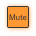
Orange: Group Mute (muted by a Mute Group or VCA);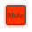
Red: Manual or Automated Mute (the channel cannot be unmuted by a group);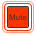
Flashing Red: Safe Mute (safe from Automation or Group unmuting);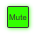
Green: Safe Unmute (safe from Automation or Group muting). Note: Mutes do not silence the recorder outputs or any pre-fader Insert sends.Mute Groups
Definition: Mute Groups allow a number of channels to be muted with the press of a single button – a horn section, or all performers from one 'act', for example.SSL Live consoles have ten mute groups, controlled using the ten Mute Group buttons on the Master Tile.
Channels of any type can be included in Mute Groups, and each channel can be in any number of Mute Groups.
To mute all signals in a Mute Group, simply press the relevant Mute Group button. The Mute Group button will go orange as will the MUTE buttons for all channels included in it.
Note: If you mute a channel locally (using its own Mute button), it will remain muted regardless of the status of any Mute Groups it is part of, as indicated by the button going red.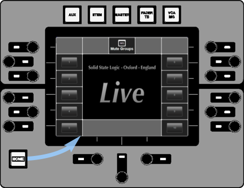 |
The Mute Group Master buttons can also be accessed from the Control Tile: Press the Home button on the Control Tile then select the Mute Groups option from the Home screen. Use the on-screen buttons or press the rotary encoders adjacent to the on-screen buttons to toggle the Mute Groups on and off. |
Assigning Channels to Mute Groups
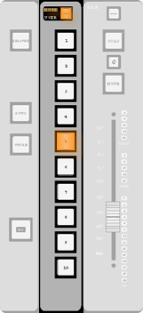
You can assign channels to Mute Groups using the Master Tile Mute Group buttons or the Mute Group functions in the Main Screen or Control Tile:
Note: If you add a Channel to a Mute Group while the Mute Group is active, the channel will immediately become muted.Master Tile Mute Group buttons:
Press & hold the Master Tile Mute Group button for the group you wish to alter – it will flash orange to indicate that it is in Configuration mode.
To add a channel to the Group, press its SELECT button – it will flash orange to indicate that it is included.
To remove a channel from the Group, press its SELECT button – it will stop flashing.
You can also add a range of channels by pressing-and-holding the SELECT button at one end of the range, then pressing the SELECT button at the other end of the range.
Press the Master Tile Mute Group button again to return to normal operation.
Detail View
An expanded version of the Mute Group Quick Controls is available in the MG + VCA Detail page, opened by double-tapping the Quick Display while the MG or VCA Assign button is active:

If the Lock button (in the right side of the page) is active, touch the Selector for the required Mute Group, then switch the channel into or out of the group using the Upper Quick Key below the MG On label at the base of the screen.
If Lock is inactive, simply press the Mute Group Selector to add or remove the channel.
Quick Controls:
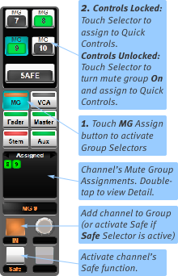
Select the MG Assign button within a Channel Strip:
Ten Mute Group Selectors are shown in the Selector area of the channel strip, along with a MUTE SAFE button.
Touch the Group Selector for the Mute Group for which you wish to add or remove the channel.
If Quick Control Lock (located in the right edge of the screen) is active, it will go blue to indicate that the Group is assigned to the Quick Controls. You can then use the Upper Quick Key to add or remove the channel to or from that Mute Group – the number area of the MG Selector will go green to indicate the channel is included in that Mute Group.
If the Quick Control Lock is inactive, the channel will be added to the Mute Group as well as being assigned to the Quick Controls.
The Left Quick Key is used for the Channel Safe, as described below.
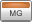
The colour bar in the channel's MG Assign button will go orange to indicate that the channel has been assigned to at least one Mute Group.The MG Selectors display as follows:
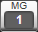
Unassigned and inactive;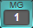
Assigned to Quick Controls and inactive;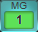
Assigned to Quick Controls and active;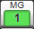
Unassigned and active.Control Tile
The Control Tile can also be used to edit Mute Group assignments for a channel:
|
Press the VCA / MG button above the Channel Screen to assign it to the controls: The 'Selected' channel is shown at the top of the screen; the Prev and Next arrow buttons either side of it can be used to scroll channels. The Mute Group Selectors are shown down the left side of the screen. To assign the current channel to a Mute Group, ensure that the Lock button above them is inactive, then simply touch the Selector for the required Mute Group. If lock is active, you will not be able to edit the screen's contents. |
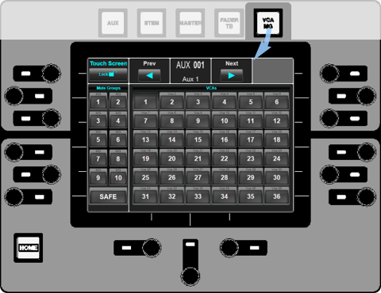 |
Mute Safe
MUTE SAFE allows you to override any indirect mutes which might try and act on a channel (Mute Groups, VCAs or Automation mutes).
When MUTE SAFE is engaged on a path that is currently muted, the path will automatically enter Safe Mute state.
When MUTE SAFE is engaged on a path that is currently unmuted, the path will automatically enter Safe Unmute state.
Flashing Red: Safe Mute (safe from Automation or Group unmuting);
Green: Safe Unmute (safe from Automation or Group muting).
Tapping the MUTE button will alternate that path between Safe Mute and Safe Unmute.
The MUTE SAFE function is enabled using the Quick Control MG page, as described above, or using similar procedures in the Channel Detail dialogue or Control Tile. Tap MUTE SAFE to engage or disengage it.
See also the Auto Mute Safe and Temporary Auto Mute Safe modes below.
Notes:MUTE SAFE on/off state is not stored in scenes or showfiles.
Auto Mute Safe
Auto Mute Safe can be used to quickly engage Mute Safe mode on any path, e.g. when a channel needs to be Safe Muted (if an instrument breaks and is generating noise) or Safe Unmuted (somebody picks up the wrong microphone) during a show. Auto Mute Safe mode is activated from a User Key. Once activated, pressing any MUTE key will engage Mute Safe mode on that path and toggle its mute state. The path will remain Safe Muted/Unmuted until the problem is resolved and Mute Safe is manually disengaged.
To use Auto Mute Safe first add it as a User Key in MENU > Setup > Options > USER KEYS tab. Auto Mute Safe is located in the Console Functions User Key options.
Once assigned to a User Key, press the User Key to engage Auto Mute Safe mode. Now press the MUTE button on any path and MUTE SAFE will turn on for that path. Auto Mute Safe will remain enabled so other paths can be placed in Mute Safe mode from their MUTE keys. The path(s) will now be in Safe Mute or Safe Unmute state, depending on the previous Mute state (unmuted or muted respectively).
Tapping the path's MUTE button will then alternate that path between Safe Mute and Safe Unmute states until Mute Safe mode is manually disabled.
To turn off Auto Mute Safe press the User Key again to disengage. Any paths that were entered into MUTE SAFE will remain in this mode after Auto Mute Safe is disengaged. Go to the Quick Control MG page or Channel View or Detail View to turn off MUTE SAFE for that path. Any other paths' MUTE buttons will now return to normal operation.
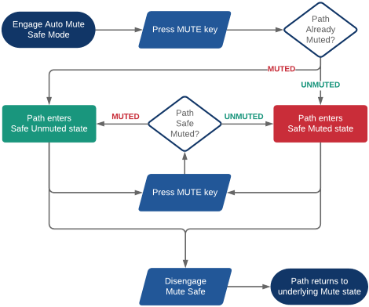
Temporary Auto Mute Safe
Temporary Auto Mute Safe extends the Auto Mute Safe mode described above. Primarily useful for line or sound checks, when only a temporary override of the mute state is required (e.g. unmuting individual channels from a band Mute Group to confidence check them), Temporary Auto Mute Safe is also allocatable to a User Key.
To assign Temporary Auto Mute Safe to a User Key navigate to MENU > Setup > Options > USER KEYS tab. Temporary Auto Mute Safe is located in the Console Functions User Key options. Once assigned to a User Key, press the User Key to engage Temporary Auto Mute Safe mode.
Once activated, a press of any MUTE key places that path into Mute Safe mode and toggles the Mute state (exactly like the Auto Mute Safe above). But in the temporary mode, a second press of the Mute key will simply leave Mute Safe mode, putting the Mute back to its 'correct' underlying state, rather than toggling its state within Mute Safe mode. Disengaging Temporary Auto Mute Safe mode cancels any Mute Safes which had been triggered by that mode. Any Mute Safes that were manually activated (whether before or after Temporary Auto Mute Safe was activated) remain unchanged when turning off the temporary mode.
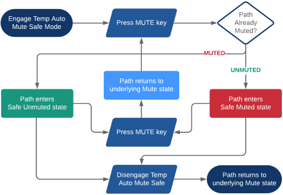
Useful Links:
SoloIndex and Glossary